Solids — Surface Area & Volume — Practice Set
Bank code: GEO-SAV · Section: Geometry · 30 questions — Easy 7 · Medium 16 · Hard 7
Volume scales with the cube of a length and surface area with the square; a cone is a third of its cylinder, and a space diagonal is Pythagoras used twice.
Every question below is live in the question bank under the ID shown — the sheet and the portal are the same questions. Attempt a level with the clock running, then check Part C.
Part A — Questions
Quantitative Comparison — the four choices are always the same, so they are not reprinted: (A) Quantity A is greater · (B) Quantity B is greater · (C) The two quantities are equal · (D) The relationship cannot be determined from the information given
Level 1 · Easy — 7 questions · ~6 min
warm-up — these must be automatic
Q1 · GEO-3DG-001 · MCQ · 40s
A cube has a side length of 4. What is the volume of the cube?
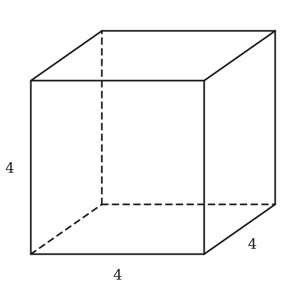
(A) 16
(B) 48
(C) 64
(D) 96
(E) 192
Q2 · GEO-3DG-006 · MCQ · 50s
A cube has side length 5. What is the length of a face diagonal (the diagonal across one square face of the cube)?
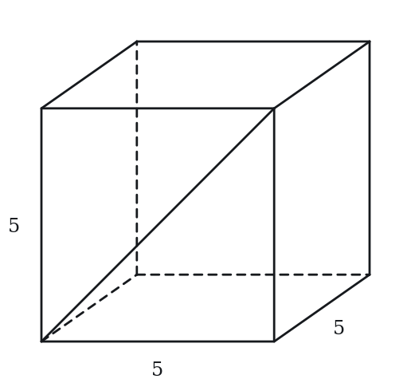
(A) 5
(B) 5√2
(C) 5√3
(D) 10
(E) 25
Q3 · GEO-CSH-001 · MCQ · 45s
A sphere has a radius of 3. What is its volume?
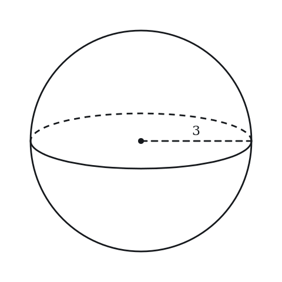
(A) 12π
(B) 27π
(C) 36π
(D) 48π
(E) 108π
Q4 · GEO-CSH-003 · MCQ · 45s
A cone has base radius 3 and vertical height 4. What is its slant height?
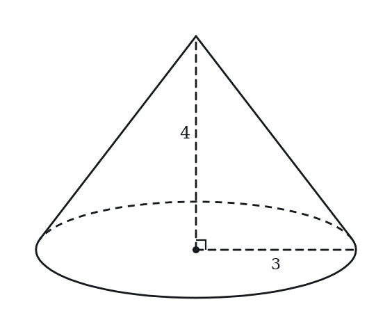
(A) 3
(B) 4
(C) 5
(D) 7
(E) 12
Q5 · GEO-SAV-007 · Numeric Entry · 60s
A rectangular prism has length 6 cm, width 4 cm, and height 3 cm. What is its total surface area in cm²?
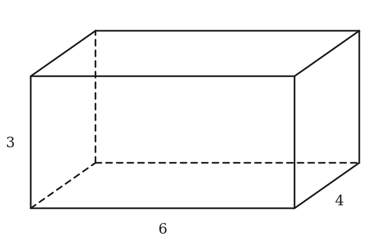
Numeric entry — write the number.
Q6 · GEO-SAV-008 · QC · 55s
A cube has side length 5.
Quantity A: Volume of the cube Quantity B: Surface area of the cube
Q7 · GEO-SAV-015 · MCQ · 70s
A cylinder has a radius of 4 cm and a height of 6 cm. What is its total surface area? (Leave answer in terms of π.)
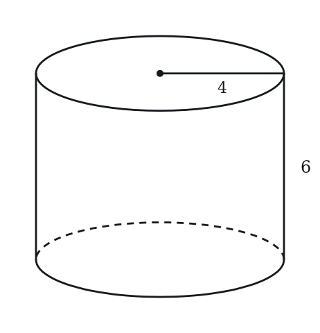
(A) 24π cm²
(B) 48π cm²
(C) 64π cm²
(D) 80π cm²
(E) 160π cm²
Level 2 · Medium — 16 questions · ~21 min
two or three steps, one planted trap each
Q8 · GEO-3DG-019 · MCQ · 80s
A rectangular sheet of paper measures 10 cm × 6 cm. The sheet is rolled so that the two 6 cm edges meet, forming a cylinder. What is the radius of the resulting cylinder?
(A) 3/π
(B) 5/π
(C) 6/π
(D) 3
(E) 10/π
Q9 · GEO-3DG-024 · QC · 70s
Cylinder A has radius 3 and height 4. Cylinder B has radius 4 and height 3.
Quantity A: Volume of Cylinder A Quantity B: Volume of Cylinder B
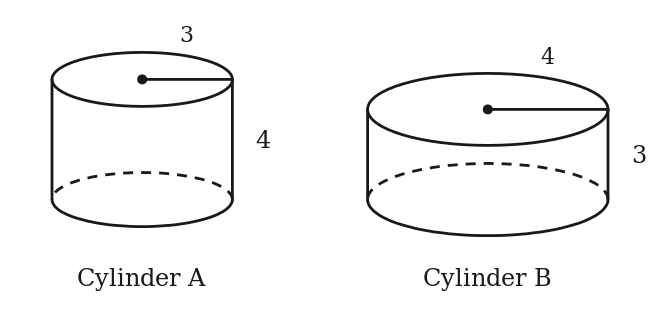
Q10 · GEO-3DG-025 · Numeric Entry · 75s
How many small boxes of dimensions 2 × 3 × 4 can fit in a large box of dimensions 6 × 9 × 8? (Assume small boxes are aligned with the large box; no rotation allowed.)
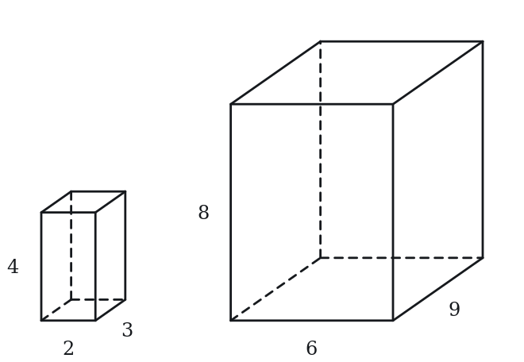
Numeric entry — write the number.
Q11 · GEO-3DG-031 · MCQ · 85s
A cube has a space diagonal of length 12. What is the total surface area of the cube?
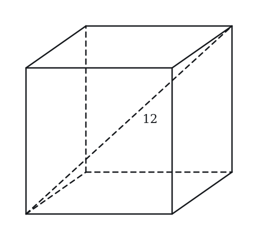
(A) 48
(B) 144
(C) 216
(D) 288
(E) 432
Q12 · GEO-3DG-037 · QC · 90s
Cylinder X has radius r and height h. Cylinder Y has radius 2r and height h/4.
Quantity A: Volume of Cylinder X Quantity B: Volume of Cylinder Y
Q13 · GEO-3DG-045 · Select all that apply · 90s
A cylinder has radius 4 and height 9. Which of the following are greater than the volume of the cylinder? Use π ≈ 3.14. Indicate all such values.
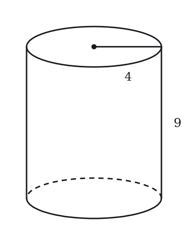
(A) 400
(B) 420
(C) 430
(D) 460
(E) 500
Q14 · GEO-CSH-017 · Numeric Entry · 75s
A cone has a total surface area of 96π and a base radius of 6. What is the slant height of the cone?
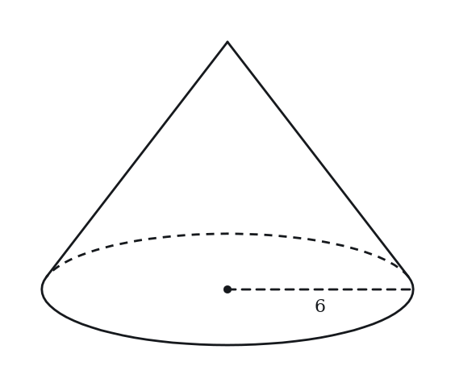
Numeric entry — write the number.
Q15 · GEO-CSH-020 · QC · 80s
Sphere S has radius 6. Cylinder C has radius 6 and height 8.
Quantity A: Volume of sphere S Quantity B: Volume of cylinder C
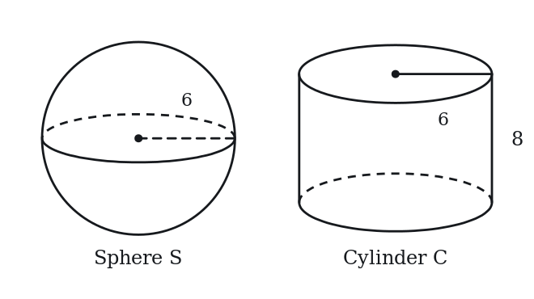
Q16 · GEO-CSH-023 · MCQ · 70s
A sphere is inscribed in a cube of side length 10 (the sphere touches all six faces of the cube). What is the volume of the sphere?
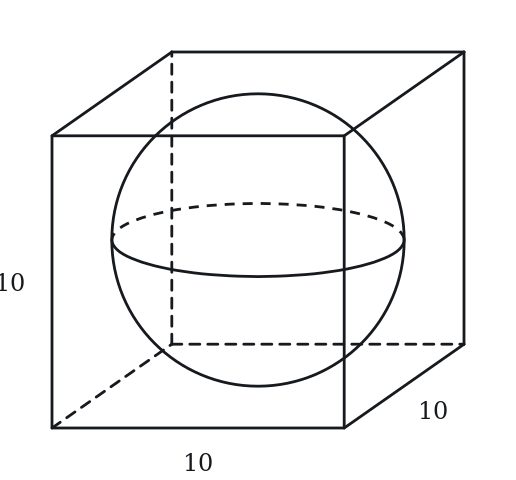
(A) (250/3)π
(B) 100π
(C) (500/3)π
(D) 500π
(E) (4000/3)π
Q17 · GEO-CSH-025 · Select all that apply · 90s
A cone has base radius 6, height 8, and slant height 10. Select all true statements.
Select all that apply.
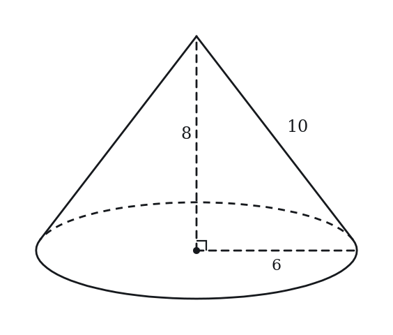
(A) The lateral surface area of the cone is 60π
(B) The total surface area of the cone is 96π
(C) The volume of the cone is 96π
(D) The slant height satisfies l = √(r² + h²)
(E) The lateral surface area equals the volume (as multiples of π)
Q18 · GEO-SAV-017 · MCQ · 70s
A cone has a radius of 5 cm, a height of 12 cm, and a slant height of 13 cm. What is its total surface area? (Leave answer in terms of π.)
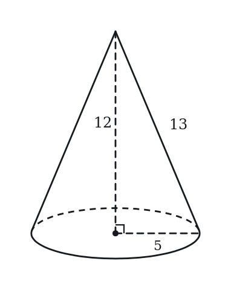
(A) 25π cm²
(B) 65π cm²
(C) 78π cm²
(D) 90π cm²
(E) 195π cm²
Q19 · GEO-SAV-018 · QC · 65s
A cylinder and a cone share the same base radius of 6 cm and the same height of 8 cm.
Quantity A: Volume of the cylinder Quantity B: 3 times the volume of the cone
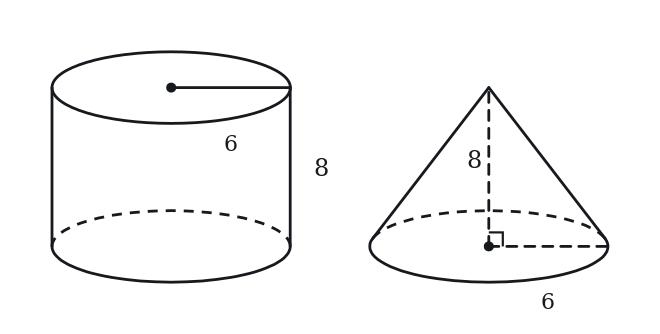
Q20 · GEO-SAV-019 · Numeric Entry · 80s
A spherical ball has a volume of 288π cm³. What is the radius of the ball in cm?
Numeric entry — write the number.
Q21 · GEO-SAV-022 · MCQ · 60s
A rectangular tank with a square base of side 6 m is filled with water to a depth of 4 m. How many cubic meters of water does the tank contain?
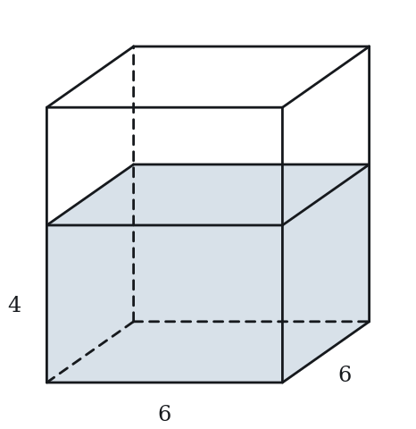
(A) 24 m³
(B) 72 m³
(C) 96 m³
(D) 144 m³
(E) 216 m³
Q22 · GEO-SAV-026 · Select all that apply · 90s
A cube has side length s.
Which of the following statements are true?
Indicate all such statements.
(A) If s doubles, the volume increases by a factor of 8
(B) If s doubles, the surface area increases by a factor of 4
(C) If s doubles, the surface area increases by a factor of 8
(D) The numerical value of the volume always exceeds the numerical value of the surface area
(E) When s = 6, the volume and surface area are numerically equal
Q23 · GEO-SAV-043 · MCQ · 95s
A square pyramid has a base side of 6 cm and a height of 4 cm. The slant height of each triangular face is 5 cm. What is the total surface area of the pyramid?
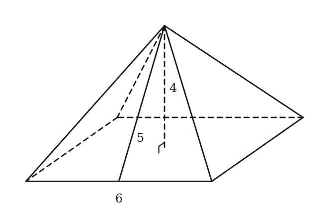
(A) 36 cm²
(B) 60 cm²
(C) 84 cm²
(D) 96 cm²
(E) 120 cm²
Level 3 · Hard — 7 questions · ~12 min
where 162+ is won or lost
Q24 · GEO-3DG-042 · MCQ · 100s
A 4 × 4 × 4 cube is painted red on all six faces and then cut into 64 unit cubes (each 1 × 1 × 1). How many unit cubes have exactly 2 red faces?
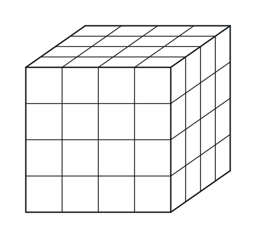
(A) 8
(B) 16
(C) 24
(D) 32
(E) 48
Q25 · GEO-3DG-049 · MCQ · 95s
Three faces of a rectangular solid that meet at one corner have areas 12, 15 and 20. What is the volume of the solid?
(A) 30
(B) 47
(C) 60
(D) 120
(E) 3,600
Q26 · GEO-SAV-039 · QC · 90s
Quantity A: The surface area of a cube with volume 64 Quantity B: The surface area of a rectangular solid with dimensions 2 by 4 by 8
Q27 · GEO-SAV-047 · Numeric Entry · 110s
A cone is carved out of a solid cylinder, where the cone shares the same circular base and height as the cylinder. The cylinder has radius 6 cm and height 12 cm. The remaining solid (after removing the cone) is melted and recast into a sphere. What is the radius of the sphere in cm?
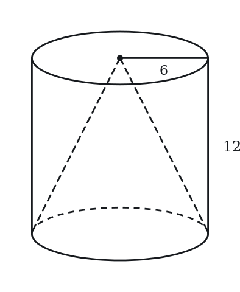
Numeric entry — write the number.
Q28 · GEO-SAV-KMF-013 · Select all that apply · 100s
A rectangular solid has volume 36. One of its faces has area 9, and all three edge lengths are positive integers. Which of the following could be the total surface area of the solid? Select all that apply.
(A) 33
(B) 49
(C) 58
(D) 66
(E) 98
Q29 · SEC-CS-009 · QC · 125s
A rectangular solid has a volume of 84, and one of its faces has an area of 14.
Quantity A: the surface area of the solid Quantity B: 120
Q30 · SEC-CS-011 · MCQ · 120s
A monument is a right pyramid with a square base. Every edge of the monument, both the four base edges and the four lateral edges, has length 12 meters. How many meters above the ground is the tip of the monument?
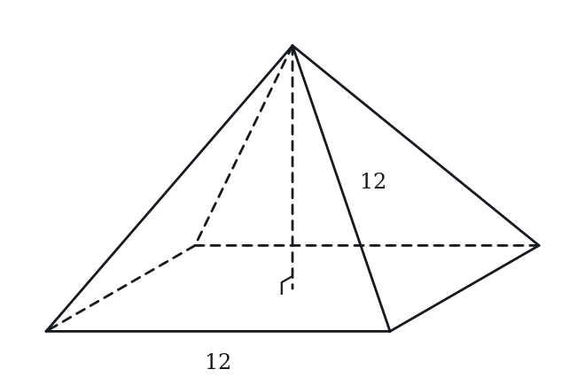
(A) 6
(B) 6sqrt(2)
(C) 6sqrt(3)
(D) 12
(E) 12*sqrt(2)
The rest of this sheet is part of Pro
All 30 questions, the answer key and full worked solutions with every trap named — plus 75 concept notes and 9,629 questions.